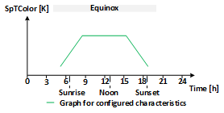
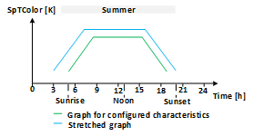
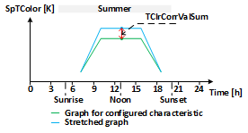

[HCL] 以人为本的照明 (HCL)
以人为中心的照明功能块 (HCL) 根据配置的特定于一天中的时间的基本特征计算当前日期和一天中的时间的照明设定点色温和亮度调整。
HCL 根据配置的特定于一天中的时间的基本特征计算一年中的当前日期和一天中的时间的照明设定点色温和亮度调整。
以人为中心的照明功能块 (HCL) 可以近似一天和一年的自然照明过程，而无需实例化调度程序。它将人工照明与自然光保持一致。
HCL 功能块根据配置的特定时间的基本特征计算当前时间的照明设定点色温和亮度调整。特定时间的基本特征在 3 月 20 日（太阳春分）有效。一天的长度和当天（3 月 20 日）的太阳高度用作拉伸或收缩图表的参考，以了解一天中特定时间的时间和幅度的基本特征。
计算当前一天的长度并在 HCL 功能块中使用它来拉伸或缩小图表，以获得时间轴上特定时间的基本特征。 HCL 功能块中使用当天地平线以上的最大太阳高度来拉伸或缩小图表，以获取值轴（幅度）上特定时间的基本特征。
如果当前一天的长度比 3 月 20 日的一天长度长，则特定时间基本特征图在时间轴上拉伸，否则收缩。在时间轴上拉伸或收缩时，以当地实际中午时间（当天最高太阳高度角）作为拉伸或收缩的中心点。这意味着当地的实际中午时间没有延长或缩短。
如果当天的最大太阳高度角高于 3 月 20 日的太阳高度角，则一天中特定时间的基本特征图在值轴（幅度）上拉伸，否则缩小。当在值轴上拉伸或收缩时，图表中特定于一天中的时间的基本特征的最小值被用作拉伸或收缩的起点。这意味着最小值不会被拉伸或收缩。
值轴和时间轴上的拉伸（收缩）是彼此独立计算的。
HCL 功能块每分钟计算一次结果。
下图直观地显示了针对给定的春分点特定时间基本特征（例如 SpTColor 作为时间的函数）在时间和值轴上独立执行的值调整的概念结果（拉伸和收缩）。
 |  |
|

Configuration
照明色温的特定时间基本特征在输入 [TColorVal] 和 [TColorTi] 处配置。用于照明亮度调节的特定时间的基本特性在输入 [BrgtVal] 和 [BrgtTi] 处配置。输入 [TColorNumPt] 和 [BrgtNumPt] 用于定义特征中使用的点数（从第一个点开始）。使用的特征点数量的配置0被解释为各个特征的禁用计算。
特定时段基本特征的配置有效期为 3 月 20 日（太阳春分）。
Shrinking or stretching on the time axis
当前一天的长度（日出到日落）用于拉伸或缩小时间轴上的特征。拉伸或收缩基于当前白天长度与 3 月 20 日白天长度之间的比率形成的缩放因子。
输入 [TColorLmTiSum] 和 [BrgtLmTiSum] 用于限制拉伸。
输入 [TColorLmTiWin] 和 [BrgtLmTiWin] 用于限制收缩。
这些限制适用于所配置的时间特定基本特征中距中午时间 6 小时的点。配置的时间特定基本特征中距中午 6 小时的点值的增加或减少不会超过配置的限制。因此，图表的收缩或拉伸取决于应用于 6 小时之外的点的限制。
这些限制适用于特征的左侧和右侧：左侧一次，适用于中午之前 6 小时的点；右侧一次，适用于中午之后 6 小时的点。
缩放因子应用于图中的所有点。点的值因此按比例增加或减少。配置的特征中距离中午超过 6 小时的点的值增加或减少超过配置的限制，因此图表的这些部分拉伸或收缩超过配置的限制。距中午时间不足 6 小时的点的值的增加或减少小于配置的限制，因此图表的这些部分的拉伸或收缩小于配置的限制。如果配置的时间特定基本特征的所有点距离中午都小于 6 小时，则所有点的值增加或减少都会小于配置的限制。
当不希望在时间轴上拉伸或收缩时，使用输入 [TColorLmTiSum]、[BrgtLmTiSum]、[TColorLmTiWin] 和 [BrgtLmTiWin] 的配置 0。
如果客户需求中没有指定时间轴上拉伸或收缩的限制，则可以为[TColorLmTiSum]、[BrgtLmTiSum]、[TColorLmTiWin]和[BrgtLmTiWin]设置最大限制为1天。
下图可视化了中午间隔左侧和右侧应用的限制的概念结果，以及给定的春分点特定时间基本特征所得到的拉伸图（例如，SpTColor 作为时间函数，限制来自 TColorLmTiSum）。
|
|


Shrinking or stretching on the value axis
最大太阳高度（中午）用于拉伸或收缩值轴（幅度）上特定时间的基本特征。
与时间轴相反，值轴没有限制。值轴（幅度）经过校正。
输入 [TClrCorrValSum] 和 [BrgtCorrValSum] 定义值轴上的拉伸：当太阳高度角处于全年最大位置时，特定时间基本特征被拉伸，使得特定时间基本特征中的最大值（该值可能不是中午时间）将升高配置值。
输入 [TClrCorrValWin] 和 [BrgtCorrValWin] 定义值轴上的收缩：当太阳高度处于全年最低位置时，特定时间基本特征会收缩，使得特定时间基本特征中的最大值（该值可能不是中午）将降低配置值。
当不需要在值轴（幅度）上拉伸或收缩时，使用输入 [TClrCorrValSum]、[BrgtCorrValSum]、[TClrCorrValWin] 和 [BrgtCorrValWin] 的配置 0。
下图可视化了对最大值应用校正的概念结果，以及针对给定的春分点特定时间的基本特征所得到的拉伸图（SpTColor 作为时间的函数，并经过 TClrCorrValSum 的校正）。
 |
|

Geographical position
一天的长度（日出到日落）、最大太阳高度（中午）和实际当地时间取决于地球的地理位置。地理位置在输入 [Latit] 和 [Lngit] 处配置。
[Latit] 的正值被视为北纬，负值被视为南纬。
[Lngit] 的正值被视为东经，负值被视为西纬。
一天的长度（日出到日落）、最大太阳高度（中午）和实际当地时间也取决于 UTC 偏移量和夏令时状态。 HCL 功能块从自动化站的设备对象中读取 UTC 偏移量和夏令时状态。这些属性是根据为自动化站配置的时区自动设置的。
地理位置和 UTC 偏移量必须一致，才能正确计算白天长度、最大太阳高度和实际当地时间。
HCL 功能块从自动化站的内部时钟获取当前本地日期和时间。
Configuration validation
时间轴上的收缩内部限制为 1 小时：收缩时，功能块将至少保留 1 小时作为图表的时间范围，以实现特定时间的基本特征，并且不会将其进一步收缩，尽管配置允许。

在计算结果之前，HCL 功能块会验证用户的配置。如果验证未通过，则输出 [ErrSta] 设置为 1，输出 [SpTColor] 和 [BrgtAdj] 设置为 0。
验证了以下几点：
- At least one characteristic must be enabled ([TColorNumPt] or [BrgtNumPt] > 0).
- More than 1 point should be configured in the enabled characteristics.
- Enabled characteristics must have a minimum time range of 1 hour.
- The time difference between neighboring points on the graph must be 1 minute at the minimum.
此外，如果访问设备对象不成功，输出[ErrSta]将设置为1。
Simulation
HCL 功能块可以以配置的速度模拟经过的时间。输入 [EnSim] 启用 HCL 功能块中的时间模拟。输入[TiFacSim]定义模拟时间的速度：值1.0表示模拟时间的速度与真实时间相同；值2.0表示模拟时间的速度是实时速度的两倍。
输入 [DaTiStts] 定义模拟的开始时间，输入 [DaTiStps] 定义模拟的停止时间。当模拟时间达到停止时间时，模拟从头开始。
如果 [DaTiStps] 早于 [DaTiStts]，则 HCL 功能块仅计算 [DaTiStts] 时间的结果。
输出 [SimActv] 指示当前是否正在进行模拟。
输出[DaTi]显示当前模拟时间。如果禁用模拟，[DaTi]显示自动化站的当前时间。
HCL 功能块不模拟闰年和夏令时。
HCL 功能块中的模拟在模拟周期的整个持续时间内使用夏令时和控制器中设备对象的 UTC 偏移量。
输入 | 描述 | 数据类型 | 默认值 |
|---|---|---|---|
Latit | North latitude | 真实的 | 47.17 [°] (楚格, 瑞士) |
Lngit | East longitude | 真实的 | 8.52 [°]（瑞士楚格） -180...180.0 [°] |
BrgtCorrValSum | Brightness correction for value summer | 真实的 | 0.0 [%] |
BrgtLmTiSum | Brightness limit for time summer | 时间 | 0 ms |
BrgtCorrValWin | Brightness correction for value winter | 真实的 | 0.0 [%] |
BrgtLmTiWin | Brightness limit for time winter | 时间 | 0 ms |
BrgtNumPt | Number of brightness adjustment points | 整数 | 0 |
BrgtVal | Brightness values | 结构 | - |
BrgtVal | 值 1...值 20 | 真实的 | 0.0 [%] |
BrgtTi | Brightness times | 结构 | - |
BrgtTi | 时间 1...时间 20 | 时间 | 0 ms 0 毫秒...1 天 |
TClrCorrValSum | Color temperature correction for value summer | 真实的 | 0.0 [K] |
TColorLmTiSum | Color temperature limit for time summer | 时间 | 0 ms |
TClrCorrValWin | Color temperature correction for value winter | 真实的 | 0.0 [K] |
TColorLmTiWin | Color temperature limit for time winter | 时间 | 0 ms |
TColorNumPt | Number of color temperature auxiliary points | 整数 | 0 |
TColorVal | Color temperature values | 结构 | - |
TColorVal | 值 1...值 20 | 真实的 | 0.0 [K] |
TColorTi | Color temperature times | 结构 | - |
TColorTi | 时间 1...时间 20 | 时间 | 0 ms 0 毫秒...1 天 |
EnSim | Enable simulation | 布尔值 | 0 |
DaTiStts | Date and time for start simulation | DateAndTime | 1990-1-1-0:0:0.0 |
DaTiStps | Date and time for stop simulation | DateAndTime | 1991-1-1-0:0:0.0 |
TiFacSim | Time conversion factor simulation | 真实的 | 1.0 1.0...10800.0 |
输出 | 描述 | 数据类型 | 默认值 |
|---|---|---|---|
BrgtAdj | Brightness adjustment | 真实的 | 0.0 [%] |
SpTColor | Setpoint color temperature | 真实的 | 0.0 [K] |
DaTi | Date and time of day | DateAndTime | 1990-1-1-0:0:0.0 |
SimActv | Simulation active | 布尔值 | 0 |
Sunrise | Sunrise 如果没有日出，则输出设置为-1s。 | 时间 | 0 ms |
Sunset | Sunset 如果没有日落，则输出设置为 1d。 | 时间 | 0 ms |
ErrSta | Error state | 布尔值 | 0 |